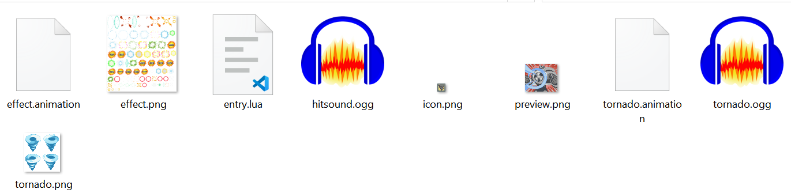

Unofficial Chip Making Guide
Welcome to the first ONB chip making guide. In this tutorial we will be walking through the code of AirToss, a custom chip. This is a simple chip that sends out a tornado through the row and deals damage to entity it hits. The hit entity is also pushed back one tile.
The Directory Setup
The directory of the chip is set up as the following. You'll see all the sounds, code and textures the chip needs.

- effect.animation : The effect .animation file needed by the effect texture to properly animate
- effect.png : This image actually contains all of the textures and is used alongside effect.animation to display effects on the screen.
- entry.lua : The main entry point to the mod. Contains all of the lua code.
- icon.png : This is the small chip icon that appears above your head in battle, or when selecting chips.
- preview.png : This is the larger chip icon that is also shown ingame.
- tornado.animation : Same as effect.animation, except for the tornado effect.
- torando.png : Same as tornado.png except for the tornado effect.
These resource can either be created manually or obtained from the discord.
Entry.lua
Entry.lua is the heart of the mod and every mod must have a file named entry.lua as that is the file the engine will look at first. We'll go through most of the code so you can have an idea of how chip mods are structured. Any line that starts with -- is a comment, and is completely ignored by the engine, and is there soley for the reader's information.
Resource loading
First, the textures, sounds and animations the chip uses should be loaded. The variable _modpath used in these functions refers to the mod folder. Textures and sounds must be loaded with Engine.load_audio or Engine.load_texture, but animations do not need to be.
--- Custom Chip: Tornado Toss
--- Setup Textures, Animations and Sounds
--- modpath refers to the root folder of the chip.
TORNADO_TEXTURE = Engine.load_texture(_modpath .. "tornado.png")
TORNADO_ANIMATION = _modpath .. "tornado.animation"
WIND_SFX = Engine.load_audio(_modpath .. "tornado.ogg")
HIT_TEXTURE = Engine.load_texture(_modpath .. "effect.png")
HIT_ANIM_PATH = _modpath .. "effect.animation"
HIT_SOUND = Engine.load_audio(_modpath .. "hitsound.ogg")
Next, you'll notice a DAMAGE variable. This is referenced later on to set the displayed damage on this chip as well as the actual damage of the spell.
--Damage property.
DAMAGE = 90
After that is the package_init, which has been commented with what each line does. Package_init is a required function in card mods.
Package Init
function package_init(package)
local props = package:get_card_props()
--standard properties
-- DisplayName of the chip
props.shortname = "AirToss"
-- Damage displayed on the chip
props.damage = DAMAGE
-- Whether or not this chip uses time freeze.
props.time_freeze = false
-- Element displayed on this chip.
props.element = Element.Wind
-- Description of this chip in the folder
props.description = "Throws a tornado forward!"
-- Description of this chip when special button is presssed
props.long_description = "Throws a tornado that pushes forward!"
-- Package ID. Usually uses some form of the author's name + chip name
package:declare_package_id("com.louise." .. props.shortname)
-- Sets small icon icon
package:set_icon_texture(Engine.load_texture(_modpath .. "icon.png"))
-- Sets large preview graphic
package:set_preview_texture(Engine.load_texture(_modpath .. "preview.png"))
-- List of codes this chip will be available as.
package:set_codes({ "A", "I", "R", "*" })
end
Card Create Action
Card create action is where most of the action happens. You’ll see that a reference to the player is passed into this function as well as the card props we previously defined.
Card create action handles setting up the player's animation and defining what happens during the frames of that animation. In this case, we are using the PLAYER_SWORD animation, but showing the navi's hand instead of a sword, which is common for these types of "summon" spells.
function card_create_action(user, props)
-- Creates a new cardAction that will play the play_sword animation
local action = Battle.CardAction.new(user, "PLAYER_SWORD")
-- Prevents the user from using other cards during this animation
action:set_lockout(make_animation_lockout())
--Function that happens when the card actually executes.
action.execute_func = function(self, user)
local actor = self:get_actor()
-- set:add_anim_action adds functions that execute on certain frames of the
-- action animation.
self:add_anim_action(1, function()
-- Allows the action to be countered during this window.
actor:toggle_counter(true)
end)
self:add_anim_action(2, function()
-- Necessary code to render the hand of the user
local hilt = self:add_attachment("HILT")
local hilt_sprite = hilt:sprite()
hilt_sprite:set_texture(actor:get_texture())
hilt_sprite:set_layer(-2)
hilt_sprite:enable_parent_shader(true)
local hilt_anim = hilt:get_animation()
hilt_anim:copy_from(actor:get_animation())
hilt_anim:set_state("HAND")
hilt_anim:refresh(hilt_sprite)
-- Get the current
local direction = user:get_facing()
-- Play the wind effect defined earlier
Engine.play_audio(WIND_SFX, AudioPriority.High)
-- Now control will be handed over to the create_tornado function.
-- Variables that are needed by that function are passed in here.
create_tornado(user, user:get_tile(direction, 1), DAMAGE, 10, direction)
end)
self:add_anim_action(3, function()
end)
self:add_anim_action(4, function()
-- End the counterable window
user:toggle_counter(false)
end)
end
return action
end
Create Tornado Function
To improve readability of the code, we created another function for handling the tornado spell.
Notes: Spell:set_hit_props takes in a HitProps object. This is where you can define the damage, element and additional properties. In this case our spell will have the following properties:
- Damage: set to 90, due to the variable we passed in.
- Hit.Impact A necessary property for most spell respects barriers, etc.
- Hit.Flash This spell will grant the target temporary invincibility after hitting it.
- Hit.Flinch This spell will flinch the target, playing its hurt animation and cancelling its current action.
- Hit.Drag This property is necessary to enable the spell to push a target.
- Drag.new(direction, 1) This moves the target in the given direction by one tile.
Full set of hit props is listed at the api site.
---@param user Entity The user summoning a tornado
---@param tile Tile The tile to summon the tornado on
---@param damage number The amount of damage the tornado will do
---@param speed number The number of frames it takes the tornado to travel 1 tile.
---@param direction any The direction the spell is travelling
function create_tornado(user, tile, damage, speed, direction)
-- Creates a new spell that belongs to the user's team.
local spell = Battle.Spell.new(user:get_team())
--Set the hit properties of this spell.
spell:set_hit_props(
HitProps.new(
damage,
Hit.Impact | Hit.Flash | Hit.Flinch | Hit.Drag,
Element.Wind,
user:get_context(),
Drag.new(direction, 1)
)
)
-- Setup sprite of the spell
local sprite = spell:sprite()
sprite:set_texture(TORNADO_TEXTURE)
sprite:set_layer(-1)
-- Setup animation of the spell
local anim = spell:get_animation()
anim:load(TORNADO_ANIMATION)
anim:set_state("1")
anim:set_playback(Playback.Loop)
anim:refresh(sprite)
spell.update_func = function(self, dt)
--- Gets the next tile in the specified direction.
--- If that tile is out of bounds, it returns nil
local tile = spell:get_tile(direction, 1)
if (tile == nil) then
-- Spell will be erased once it reaches the end of the field.
spell:erase()
return
end
--- Makes the spell slide to the next tile over a certain number of frames.
spell:slide(tile, frames(speed), frames(0), ActionOrder.Voluntary, nil)
--- Attacks the entities this spell collides with.
self:get_current_tile():attack_entities(self)
end
spell.attack_func = function(self, other)
-- Erases the spell once it hits something
create_hit_effect(spell:get_field(), spell:get_current_tile(), HIT_TEXTURE, HIT_ANIM_PATH, "8", HIT_SOUND)
spell:erase()
end
spell.delete_func = function(self)
spell:erase()
end
spell.battle_end_func = function(self)
spell:erase()
end
--- Function that decides whether or not this spell is allowed
--- to move to a certain tile. This is automatically called for
--- functions such as slide and teleport.
--- In this case since it always returns true, it can move over
--- any tile.
spell.can_move_to_func = function(tile)
return true
end
user:get_field():spawn(spell, tile)
return spell
end
Create Hit Effect Function
Lastly, for BN accuracy, we have the hit effect function. This spawns an artifact, which is a sort of texture and animation that does not interact with entities. Most spells have an impact effect, which is what this function is doing.
--- create hit effect.
---@param field any #A field to spawn the effect on
---@param tile Tile tile to spawn effect on
---@param hit_texture any Texture hit effect. (Engine.load_texture)
---@param hit_anim_path any The animation file path
---@param hit_anim_state any The hit animation to play
---@param sfx any Audio # Audio object to play
---@return any returns the hit fx
function create_hit_effect(field, tile, hit_texture, hit_anim_path, hit_anim_state, sfx)
-- Create artifact, artifacts do not have hitboxes and are used mostly for special effects
local hitfx = Battle.Artifact.new()
hitfx:set_texture(hit_texture, true)
-- This will randomize the position of the effect a bit.
hitfx:set_offset(math.random(-25, 25), math.random(-25, 25))
local hitfx_sprite = hitfx:sprite()
hitfx_sprite:set_layer(-3)
local hitfx_anim = hitfx:get_animation()
hitfx_anim:load(hit_anim_path)
hitfx_anim:set_state(hit_anim_state)
hitfx_anim:refresh(hitfx_sprite)
hitfx_anim:on_frame(1, function()
Engine.play_audio(sfx, AudioPriority.Highest)
end)
hitfx_anim:on_complete(function()
hitfx:erase()
end)
field:spawn(hitfx, tile)
return hitfx
end